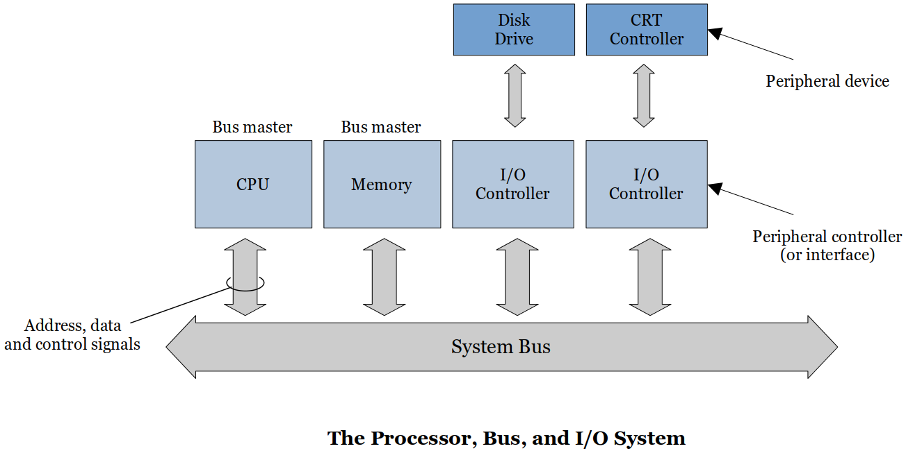
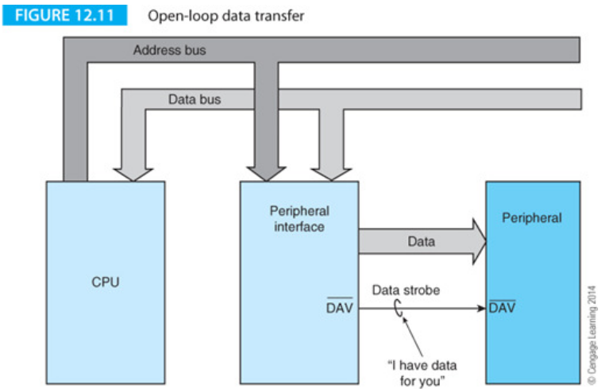
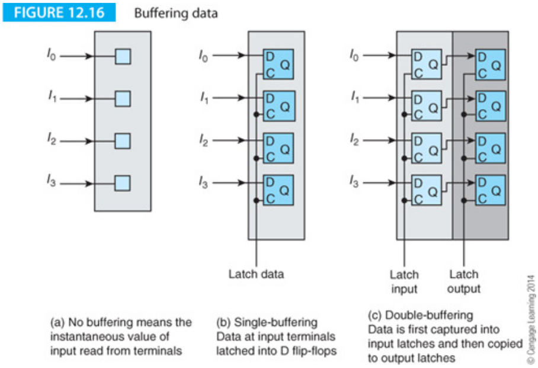
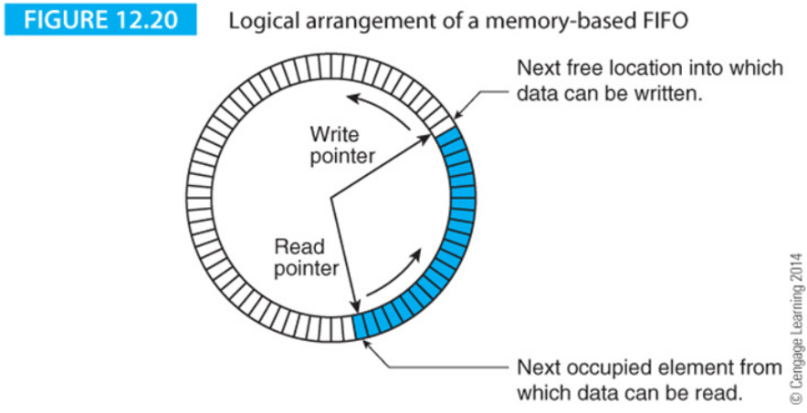
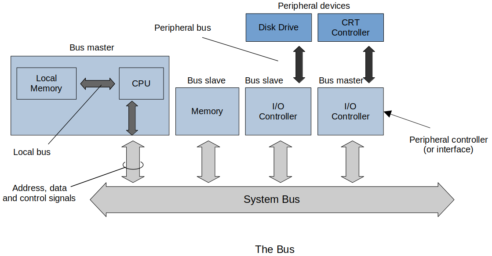
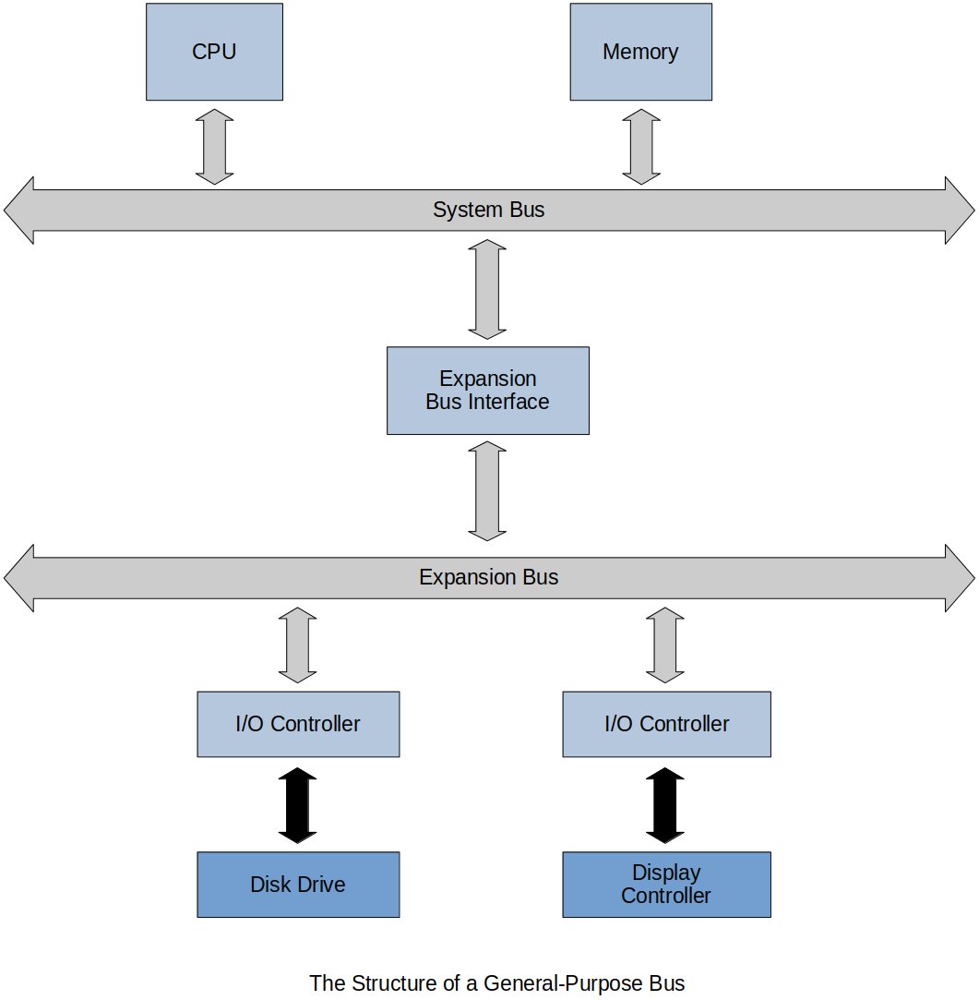

Home | Projects | Notes > Computer Architecture & Organization > Input/Output
Input/Output
Introduction
General Input/Output Requirements:
Select device (and determine status)
Initiate transfer
Transfer the information
Conclusion (free up the device for the next I/O)
Data Transfer Units:
Bits per seconds (BPS)
Number of bits (
Sometimes denoted as bPS to specify "bit"
Bytes per second
Number of bytes being transferred in a second
BPS/8
Baud rate
This was a unit for modems and the unit originated with the telegraph and was set to be one morse dot per second.
Now it refers to the number of times per second a signal in a communication channel varies, or makes changes between states.
A Baud MAY transmit more than one bit at a time. (Check your modem for more details.)
Fundamental Principles of I/O

Peripheral
External device connected to your computer system.
The device is not directly connected to the CPU or main memory but to the dedicated I/O controller.
The reason behind this is that we don't want the system bus to be affected by the peripherals where read/write (magnetizing) takes place.
e.g., Keyboard, Screen/CRT, Mouse, Graphics Card, RS-232, USB, Wireless network card, Hard drive, CD/DVD, etc.
Memory-Mapped Peripherals
Memory-Mapped IO (MMIO) is the process of interacting with hardware devices by reading from and writing to predefined memory address.
Memory-Mapped Peripherals are when input/output devices are treated like memory locations (in main memory).
To send something out to an output devices uses the same instruction as a
STOREand reading from an input device use the same instruction as aLOAD.The most well-known memory mapped output device is the screen.
You can turn on and off an individual pixel in your console screen.
Data Transfer
Open-Loop
Put the data on the bus then alert everyone that the data is there.
The CPU provides the data to the peripheral interface (PI).
The periferal interface then puts the data on the data bus.
Asserts the
The peripheral read the data then the PI resets
When there's no new data,
When there's a new data available,
Open-Loop because there is no feedback that the data has actually be received.
Cheap, slow, and CAN lose data

Closed-Loop (or Handshaking)
With a closed loop the I/O device reponses with a data acknolwedgement (ACK) when the data transfer has been completed. (Also referred to as a handshake.)
This
Same type of signaling and data tranfer as in the Open-Loop data transfer but now there is a
CANNOT lose data
But, there can be timeout conditions when there are problems with the peripheral. The PI can then generate an interrupt so that someone or something can take care of the problem.

Data Buffering
Data on the bus will only be on the bus during the duration of the clock cycle. Once it is over, the data is gone from the bus.
D Flip-flops can be used to capture the data and hold it until the peripheral has taken care of it.
As shown in (c) of the following figure, there can be multiple layers of latches. (One good example is the FIFO structure.)

The FIFO
The simplest FIFO structure is a register with an input port that receives the data and an output port. The data source provides the FIFO input and a strobe. Similarly, the reader provides a strobe when it wants data.

FULL
EMPTY
When data arrives at the input terminals, it ripples down the shift register until it arrives at the next free location.
Here's another example that uses memory instead of a set of shift registers:

This can be implemented with hardware and is not as complicated. Just need two pointers (stored in two registers); one for the write location and the other for the read location. There are some sync problems with this arrangement that will be discussed in the Operating Systems.
I/O Strategy
I/O Methods
Programmed I/O
Simple and easy but slow
Very CPU intensive, very inefficient
e.g., The CPU keeps checking the I/O device until it is ready to transmit or receive the data.
xxxxxxxxxx41RETEAT2Read peripheral status3UNTIL ready4Transfer data to/from peripheralThis is called a polling loop.
Interrupt-Driven I/O
Faster but more complex
Let the hardware do the work in waiting for a signal that may or may not even happen.
The interrupt is a CPU input that alerts the CPU an I/O request is being made.
CPUs, at the very least, handle hardware interrupts.
Some CPUs can generate hardware interrupts to another CPU or CPU like device.
Some CPUs can generate software interrupts which are then handled like any other hardware interrupts.
Interrupts can happen at any time but they are only detected during the instruction fetch phase.
See the Interrupts and Exceptions section in the following notes: Privileged Mode and Exceptions
Polled I/O
The CPU has to check each device to determine which one sent the interrupt.
With a polled interrupt the CPU will then start checking each I/O device to see which one sent the interrupt. This polling is checked in priority order.
This can be accomplished via hardware or software.
Vectored I/O
With a vectored interrupt the address of the interrupting device is also provided with the interrupt. The CPU does not waste time polling the devices.
Device sends an interrupt
CPU generates an acknowledge (ACK) signal
The interupting device sends its address (vector) onto the data lines
The CPU reads the vector and determines the device
The CPU sends a second ACK addressed to the interrupting device which resets its interrupt FF.
The problem with this structure is that all other interrupting devices will respond to the first CPU ACK. Gets junk on the data lines.
A daisy chain structure is used to prevent the problem. Lower priority devices are prevented from responding to the ACK or from interrupting the CPU.
If the daisy chain structure is placed in the ACK path it is called BACKWARD daisy chain.
Any device may interrupt the CPU (still) so the CPU has to stop processing (maybe a higher priority interrupt) to handle the interrupt.
This is NOT a preferred method.
If the daisy chain structure is placed in the interrupt path it is called FORWARD daisy chain.
Lower priority devices are prevented from interrupting the CPU.
Direct Memory Access
Most complex but can block the CPU from accessing memory
All I/O is handled directly by the CPU. Majority of data either goes directly into memory from the input device or is read from memory and sent directly to the output device. Why waste all the CPU time to do "trivial" processing of just moving data around? Let's just have a simple piece of hardware (DMA controller) that does that.
DMA controller has a word count register that keeps how many words of data it needs to transfer, an address register that points to the memory address whose data is to be transferred, and a buffer along with a little bit of control logic.
DMA is connected to the system bus and main memory and sits between the system bus and the deivce that it needs to access.
The CPU initializes the DMA controller and tells it to start the data transfer. The DMA transfers the data until complete.
While the word count register is not
While the DMA is transferring the data the CPU is prevented from accessing memory. This is called cycle stealing. Why does this happen?
To prevent those situations like CPU trying to write on to memory section where some data is being transferred from memory to an I/O device.
Data available in the device buffer may be lost if not transferred immediately.
CPU could access incorrect data if the DMA has not completed the transfer.
Note that CPU can still do other jobs that does not require memory access, and this is one of the advantages of using DMA.
Channels
Channels are interfaced with several I/O devices.
Extensive error detection/correction, data formatting, and code conversions
Interrupt CPU under any error condition
Multiplexer channel
Connected to several medium to low speed devices
Data is tagged and placed in per-specified memory areas
Character multiplexer
Transfers a character at a time and moves on to the next device
Block multiplexer
Transfers a block at a time and moves on to the next device
Selector channel
Connected to high speed devices such as HDD, SDD
Stays connected until entire transfer is completed
Data Links (between the CPU and I/O device)
Simplex
Unidirectional
xxxxxxxxxx11----->
Half-Duplex
Only one direction at a time
xxxxxxxxxx11-----> or <-----
Full-Duplex
Both directions at the same time
xxxxxxxxxx21----->2<-----c.f. Different frequencies will not interfere with each other.
Each of the links can be serial (one write) or in parallel (several wires)
Data Conversion
Has to convert the physical media to a format that the CPU understands.
Memory Mapped
Memory and I/O devices are connected to the same bus. The device addresses become part of the memory. Normal
Loads andStores can be used to access I/O devices. Some of the memory is taken up by I/O devices. Hard to tell the difference between normal memory access and I/O operations. (Advantage)Accessing memory mapped devices can slow down overall memory access. (Disadvantage)
The Bus

Bus Master
Can take control of the system bus (e.g, CPU) Bus Slave
Can only respond to a transaction initiated by a remote bus master
Bus master can designate activities to the slaves and bus slaves can go off and handle those activities (I/O). Bus master can also stop these slave devices from doing their jobs whenever it needs to take over control of the bus.
Types of Bus:
Logical bus
System bus
Peripheral bus
The system bus is made up of the address, data and control paths from the CPU. Memory and memory-mapped I/O devices are connected to this bus. Such a bus has to be able to operate at the speed of the fastest device connected to it.
The system bus demonstrates that a one size fits all approach does NOT apply to computer design because it would be hopelessly cost-ineffective to interface low-cost, low-speed peripherals connected to a high speed bus.
Bus Structures and Topologies
Simple example of a bus structure

Can have two busses which can have different functionality, speed and protocols.

The Structure of a Bus
The Data Bus
Width (Number of bits at one time)
Speed frequency usually give in MHz or bits/second
Latency (The time it takes from when the request is made until the data is provided)
Bus Speed

Address Bus
Some systems have an explicit address bus that operates in parallel with the data bus. When the processor writes data to memory, an address is transmitted to the memory system at the same time the data is transmitted.
Some systems combine address and dta buses together into a single multiplexed bus that carries both addresses and data (albeit alternately).
In some cases the address and/or data transactions may take twice on the bus to transmit all the address/data.

The efficiency of both non-multiplexed and multiplexed address buses can be improved by operating in a burst mode in which a sequence of data elements is transmitted to consecutive memory addresses.
Burst-mode operation is used to support cache memory systems.
Following figure illustrates the concept of burst mode addressing where an address is transmitted for location

The Control Bus
The control bus regulates the flow of information on the bus. Following figure describes a simple

Some systems have separate read and write strobes rather than
The active-low data valid signal,